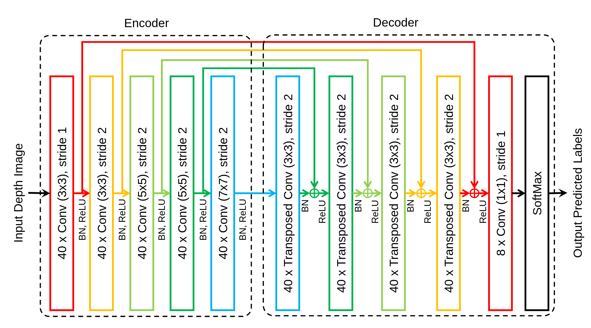

Semantic segmentation is an important step for hand and object tracking as subsequent tracking algorithms depend heavily on the accuracy of the segmented hand and object. However, current methods for hand and object segmentation are limited in the number of semantic labels, and lack of a large scale annotated dataset to train an end-to-end deep neural network for semantic segmentation. Thus, in this work, we present a framework for generating a publicly available synthetic dataset, that is targeted for upper limb rehabilitation involving hand-object interaction and uses it to train our proposed deep neural network. Experimental results show that even though the network is trained on synthetic depth images, it is able to achieve a mean intersection over union (mIoU) of 70.4\% when tested on real depth images. Furthermore, the inference time of the proposed network takes around 6 ms on a GPU, thus making it suitable for real-time applications.
We aim to generate realistic synthetic depth images of a human model (SMPL+H) grasping objects and performing upper limb movements such as lifting, pouring and reaching actions.
Our proposed Fully Convolutional Network (FCN) is inspired by Taylor et al. work on Articulated distance fields for ultra-fast tracking of hands interacting. The network is capable of fast per-pixel classification of depth images into eight different classes: (1) black for background/invalid pixel, (2) cyan for foreground, (3) blue for left hand, (4) red for right hand, (5) magenta for left forearm, (6) yellow for right forearm, (7) green for objects and (8) orange for table.
@inproceedings{hoseg:2019,
title = {Hand and Object Segmentation from Depth Image using Fully Convolutional Network},
author = {Guan Ming, Lim and Prayook, Jatesiktat and Christopher Wee Keong, Kuah and Wei Tech, Ang},
booktitle = {41st Annual International Conference of the IEEE Engineering in Medicine and Biology Society (EMBC)},
year = {2019}
}